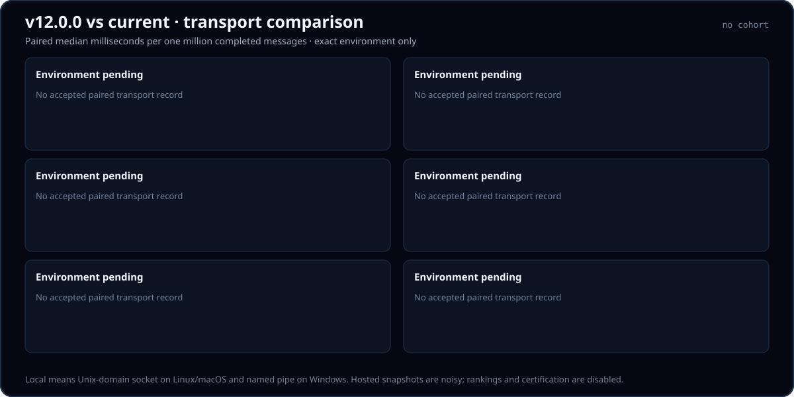

Native local IPC
Linux and macOS use Unix domain sockets. Windows uses a named pipe. Those are host-native implementations, not one portable socket primitive. Both versions use the Node byte reflector.
One million completed messages
Each value compares node-ipc 12.0.0 with the current build on the same runner, Node version, transport, payload, and paired sample. Results stay grouped by operating system and socket semantics.

Platforms appear as Linux, macOS, then Windows. Every table keeps native local IPC, TCP, TLS, UDP4, and UDP6 in that fixed order.
Loading compact transport data…
Expected but unverified pairs remain Pending. Missing evidence is never converted into zero.
| Platform | Native local IPC | TCP | TLS | UDP4 | UDP6 |
|---|---|---|---|---|---|
| Linux | Unix domain socket · Pending | Pending | Pending | Pending | Pending |
| macOS | Unix domain socket · Pending | Pending | Pending | Pending | Pending |
| Windows | Windows named pipe · Pending | Pending | Pending | Pending | Pending |
Linux and macOS use Unix domain sockets. Windows uses a named pipe. Those are host-native implementations, not one portable socket primitive. Both versions use the Node byte reflector.
Both versions use the Node byte reflector. TCP is a loopback ordered stream. TLS is an encryption-only bulk-transfer lane: peer verification is disabled consistently for v12 and current, and the handshake is outside timing. It is not authenticated-TLS evidence.
Official datagram evidence uses the standard-C exact-count reflector for both versions. The lanes retain their message boundaries and address families, and accepted samples verify the expected content, sequence, counts, and cleanup.
These GitHub-hosted hybrid-oracle runs are classified snapshot-noisy. They show paired observations on ephemeral runners, not hardware-normalized rankings, certifications, or a performance regression gate. No result is hosted until the complete matrix and every oracle-provenance, exact-count, correctness, and cleanup gate are valid.
| Field | Paired value |
|---|---|
| Application payload | Deterministic 64 bytes |
| Correctness probe | 64 sequenced messages before timing |
| Warm-up | 100,000 completed messages |
| Measured work | 1,000,000 completed messages per version and transport |
| Samples | Seven alternating v12/current pairs |
| Oracle | Same implementation within each pair: Node byte reflector for local/TCP/TLS; standard-C exact-count reflector for official UDP4/UDP6 evidence |
| C provenance | Source and binary SHA-256, compiler and version, fixed flags, and platform/architecture target |
| Primary value | Median milliseconds per million completed messages |
Open the per-environment raw samples from the live tables, or start from the transport manifest. The methodology documents pairing, exact-count gates, oracle provenance, and interpretation.